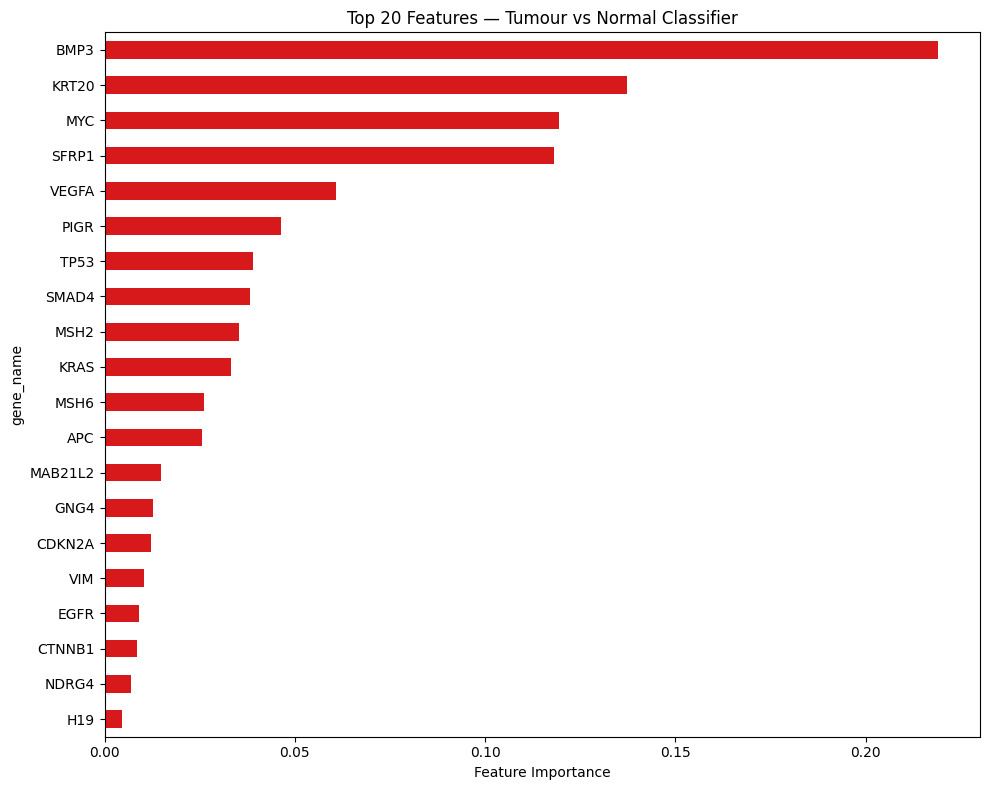
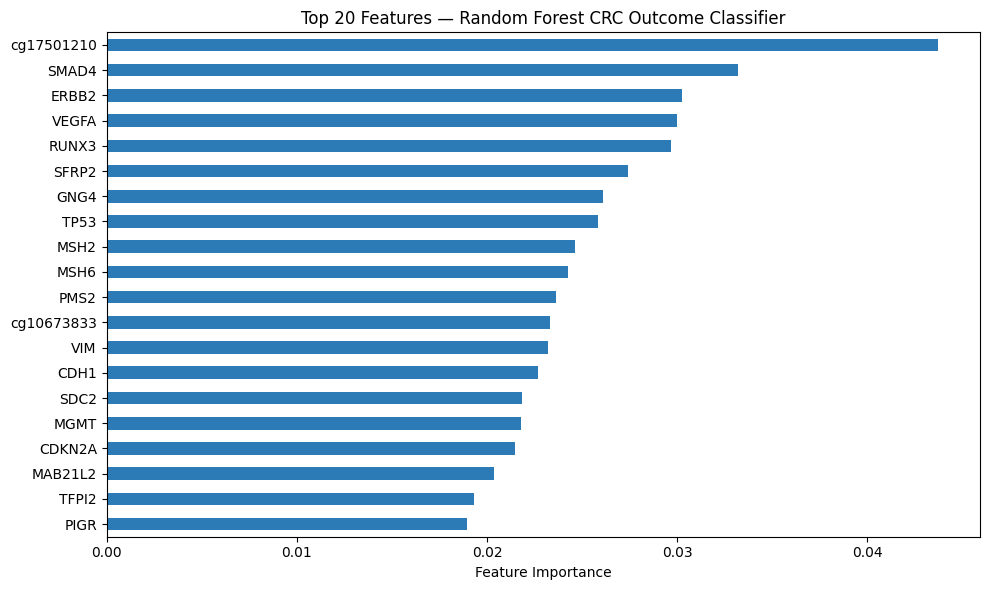

Summary
Colorectal cancer is shaped as much by epigenetic changes, chemical modifications to DNA that alter gene activity without changing the underlying sequence, as it is by mutation. This project set out to find genes that are consistently dysregulated in colorectal cancer through this kind of epigenetic mechanism, using only public data, and then to check whether those findings held up in a much larger, independently generated dataset.
The first phase used three small public microarray datasets from the Gene Expression Omnibus, covering chromosomal instability, early-onset disease, and direct drug-induced demethylation, and found six genes that were significantly dysregulated across all three independent experiments. The second phase took those candidates to TCGA-COAD, a dataset of about 460 patients with matched RNA-seq and DNA methylation data, and asked two harder questions: does promoter methylation actually explain the expression change directly, and can a machine learning model distinguish tumor from normal tissue using expression alone. Four of the original six genes reappeared among the top features of a classifier that separated tumor from normal tissue with a cross-validated AUC of 1.0, and one of them, CDH1, showed a direct, statistically significant negative relationship between promoter methylation and expression, which is about as clean a demonstration of epigenetic silencing as this kind of public data analysis can produce.
The project also tested, and honestly reported, a negative result: predicting patient survival from these same molecular features performed no better than chance, which is itself a useful finding about the limits of what tumor-versus-normal molecular signatures can tell you about outcome.
Introduction and Background
Colorectal cancer development involves two broad categories of molecular change, genetic mutations that alter protein sequence, and epigenetic modifications, chiefly DNA methylation, that silence or activate genes without touching the sequence itself. Promoter hypermethylation is a particularly well-documented mechanism for silencing tumor suppressor genes in colorectal cancer, and it has practical relevance beyond basic biology, since methylation patterns are stable, measurable in tissue and sometimes blood, and increasingly used as diagnostic and prognostic biomarkers.
Public repositories like the Gene Expression Omnibus (GEO) and The Cancer Genome Atlas (TCGA) make it possible to test hypotheses like this without generating new wet lab data. GEO hosts thousands of smaller, independently generated microarray and sequencing datasets, which are useful for finding genes that replicate across genuinely different patient cohorts and experimental setups, a stronger form of evidence than any single dataset can provide on its own. TCGA, by contrast, offers a single much larger and better-powered cohort with matched multi-omic data on the same patients, which is suited to testing direct mechanistic relationships, like whether methylation at a specific promoter actually correlates with expression of the gene it regulates, in a way that small datasets are usually underpowered to do.
This project used both resources in sequence. The first version used three GEO datasets to identify candidate genes that show up as dysregulated across independent experiments. The second version took the strongest candidates from that list into TCGA-COAD to test them against a much larger cohort and to see whether a purely computational read of tumor versus normal tissue held up.
Methodology and Data
Version 1, GEO microarray analysis.
Three independent datasets were retrieved programmatically from GEO using the Bioconductor GEOquery package. GSE30540 compared chromosomal-instability-high versus chromosomal-instability-low colorectal tumors (25 versus 10 patients). GSE4107 compared early-onset colorectal cancer mucosa against healthy controls. GSE32323 compared colorectal cancer cell lines treated with the demethylating agent 5-aza-2'-deoxycytidine against untreated controls, which serves as a direct experimental readout of what happens to expression when methylation is chemically removed. Expression matrices were extracted, low-variance probes filtered, and quantile normalization applied where needed. Differential expression was run using limma, with empirical Bayes moderation, and genes were called differentially expressed at an absolute log2 fold change above 1 and a Benjamini-Hochberg adjusted p-value below 0.05, with the GSE30540 result treated as exploratory given its small group size and use of nominal rather than FDR-corrected significance.
Version 2, TCGA-COAD validation.
TCGA-COAD data was queried directly through Google BigQuery via the ISB Cancer Gateway in the Cloud (ISB-CGC), pulling RNA-seq expression (FPKM-UQ, unstranded) for 39 genes of interest, DNA methylation beta values for 20 CpG probes at the promoters of those genes, and clinical metadata, across all TCGA-COAD tumor samples. Of 456 patients with both RNA-seq and methylation data, 296 had complete data across all three sources after merging by patient barcode. RNA-seq values were log2 transformed, and for each methylation probe and its associated gene, a Pearson correlation was computed across all 296 patients, where a negative correlation is the epigenetic silencing signature, higher promoter methylation predicting lower expression. Separately, a Random Forest classifier was trained in Python on 38 gene expression features to distinguish primary tumor from normal tissue (458 tumor versus 41 normal samples), using balanced class weights to handle the imbalance and 5-fold stratified cross-validation for evaluation. A second classifier attempted to predict patient vital status, alive versus dead, from the same molecular features.


GSE30540 yielded 104 differentially expressed genes between chromosomal-instability-high and low tumors (34 up, 70 down), treated as exploratory given the small comparison group. GSE4107 yielded 2,421 differentially expressed genes in cancer mucosa versus healthy tissue (1,866 up, 555 down), FDR-corrected. GSE32323 yielded 3,433 differentially expressed genes between matched tumor and normal tissue using a paired design blocked by patient, and within that dataset's demethylation sub-experiment, 60 genes were identified as candidates for direct epigenetic silencing, meaning their expression changed specifically after the demethylating drug treatment. Six genes were significant across all three independent datasets, despite those datasets using different patient populations, different comparisons, and in one case a completely different experimental design (drug treatment rather than tumor versus normal). Those six were H19, an epigenetically regulated long non-coding RNA already well documented in colorectal cancer, PIGR, a mucosal immunity gene consistently lost in tumors, GNG4, a G-protein signaling gene altered across several cancer types, CYP2B6, a drug metabolism gene relevant to the tumor microenvironment, PRAP1, expressed in normal colon epithelium and lost in cancer, and MAB21L2, a developmental transcription factor with an emerging but less established role in colorectal cancer.
CDH1, which encodes the cell adhesion protein E-cadherin, showed a statistically significant negative correlation between promoter methylation at probe cg23606718 and gene expression across the 296 patients with complete data (r = -0.24, p < 0.0001). As methylation at that promoter increased from 0 to 0.8, CDH1 expression declined in step. Because E-cadherin loss is a well-established step in tumor invasion, this is a direct, mechanistically interpretable demonstration of epigenetic silencing acting on a gene with a clear functional consequence, not just a correlation between two molecular layers. The Random Forest classifier separated tumor from normal tissue with a cross-validated AUC of 1.0, a strong result, though one that should be read with the caveat that tumor-versus-normal classification from bulk gene expression is a comparatively easy problem, given how different malignant and healthy colon tissue are at the transcriptional level. More informative than the AUC itself was which genes drove the classification. The top six features were BMP3, a clinically validated biomarker already used in stool DNA screening tests, KRT20, a standard colorectal epithelial marker, MYC, the most frequently amplified oncogene in colorectal cancer, SFRP1, a Wnt pathway inhibitor frequently silenced by methylation in this cancer, VEGFA, a driver of tumor angiogenesis, and PIGR, the same gene identified independently in the version 1 cross-dataset analysis.
Four of the six candidate genes from version 1, PIGR, GNG4, MAB21L2, and H19, appeared among the top 20 features of the version 2 classifier. These genes were found independently from three small GEO microarray datasets using differential expression analysis, and then reappeared as important features in a completely different dataset (TCGA), a different molecular platform (RNA-seq rather than microarray), and a different analytical method (a Random Forest classifier rather than limma). That kind of convergence across independent data, platforms, and methods is a stronger form of evidence than any one result taken alone. The survival classifier, by contrast, achieved a cross-validated AUC of 0.506, indistinguishable from chance. This is worth reporting plainly rather than downplaying. Overall survival in colorectal cancer depends heavily on factors this analysis did not capture, including treatment received, surgical margin status, and whether the cancer had already metastasized. The result shows, correctly, that a tumor-versus-normal molecular signature is not automatically a prognostic one, and that predicting patient outcome needs clinical covariates alongside molecular data, not molecular data on its own.
Conclusion
TCDH1 methylation is the strongest candidate in this project for a biomarker with a plausible mechanism, and the natural next step is testing whether cg23606718 methylation status, on its own or alongside a small methylation panel, predicts anything clinically useful, tumor stage, recurrence, or response to treatment, that a purely genetic or purely expression-based marker would miss. For the six cross-dataset candidate genes as a group, the priority is moving from association to mechanism for the ones that have not already gotten that treatment here, particularly GNG4 and MAB21L2, where the biological story is currently much thinner than it is for H19 or PIGR. More broadly, this two-phase approach, small independent datasets first to find candidates that replicate, then a single larger matched-omics cohort to test mechanism, is a template worth reusing for other cancers where GEO has multiple small independent studies but TCGA also has a matched cohort available. The gene list used in the TCGA phase was curated rather than genome-wide, which kept the analysis tractable but means a genome-wide methylation and expression scan on the same 296 patients is a reasonable next step to check whether other strong candidates were missed simply because they were not on the original list.
This project moved from a bored curiosity about GWAS-adjacent bioinformatics tools to a two-part analysis that found six candidate genes across three independent small datasets, then confirmed four of them in a completely separate, much larger cohort using a different data type and a different method. CDH1's methylation-expression relationship stands out as the clearest single mechanistic result, a direct, statistically robust link between an epigenetic mark and the silencing of a gene with a known functional role in cancer invasion. The honestly reported null result on survival prediction matters just as much, since it draws an accurate line around what tumor-versus-normal molecular signatures can and cannot tell you, and that kind of boundary is exactly what stops a promising computational finding from being oversold.
References
1. Habermann, J. K., et al. Genomic instability influences the transcriptome and proteome in endometrial cancer subtypes. Molecular Cancer, 2012. (GSE30540)
2. Sabates-Bellver, J., et al. Transcriptome profile of human colorectal adenomas. Molecular Cancer Research, 2007. (GSE4107)
3. Khamas, A., et al. Screening for epigenetically masked genes in colorectal cancer using 5-aza-2'-deoxycytidine, microarray and gene expression profile. Cancer Genomics and Proteomics, 2012. (GSE32323)
4. Ritchie, M. E., Phipson, B., Wu, D., et al. limma powers differential expression analyses for RNA-sequencing and microarray studies. Nucleic Acids Research, 2015.
5. Davis, S., Meltzer, P. S. GEOquery, a bridge between the Gene Expression Omnibus and Bioconductor. Bioinformatics, 2007.
6. Cancer Genome Atlas Network. Comprehensive molecular characterization of human colon and rectal cancer. Nature, 2012.
7. Goldman, M. J., Craft, B., Hastie, M., et al. Visualizing and interpreting cancer genomics data via the Xena platform. Nature Biotechnology, 2020.
8. Pedregosa, F., Varoquaux, G., Gramfort, A., et al. Scikit-learn, machine learning in Python. Journal of Machine Learning Research, 2011.
9. ISB Cancer Gateway in the Cloud (ISB-CGC), isb-cgc.org.